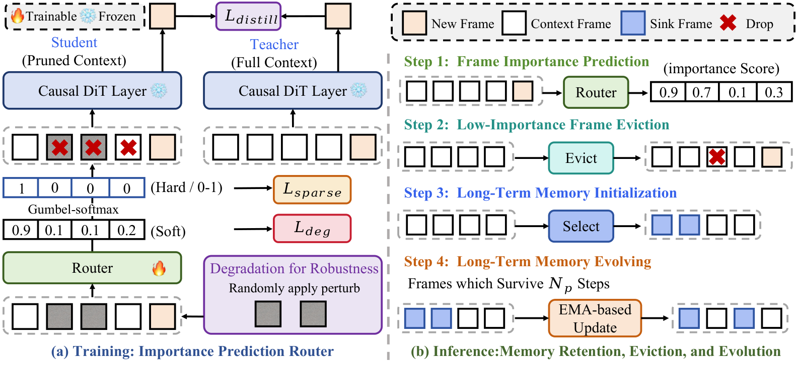

Paper Notes
01 · Useful History Changes over Time
自回归视频把已经生成的片段作为后续条件。缓存无限增长不可行，FIFO 又只按时间淘汰，可能丢掉仍有用的主体信息。固定 attention sink 保留首帧，可以稳定外观，却也可能在场景演化后保留过时的空间布局。论文把这两个问题合并为有限容量下的保留、淘汰和长期锚点更新。
这里的 frame 是经过 VAE 时间压缩的 latent frame，不等同于最终视频的一张 RGB 帧。每个 latent frame 在各层有一组空间 token 的 K/V。默认缓存上限 21 个 latent frames，因此不能把它解释为只看过去 21 张输出图。
方法没有额外输入分割标签或语言教师。“重要性”是根据当前块与历史特征学习出的上下文用途；它不是显式对象身份，也不是保证正确的几何或语义证据。
Paper Notes
02 · Read the Router and Distillation Diagram

Haowei Zhu et al., 2026. Original figure, unchanged. CC BY 4.0. · Paper & Caption ↗
原图左侧的 router 将当前 chunk 汇聚特征与各历史帧汇聚特征拼接，经四层 MLP 输出保留和删除两个概率。训练用 Gumbel-Softmax 形成可微离散选择，整帧的空间 token 一起保留或移除。选择粒度粗于 token，但便于维护帧间时序和缓存布局。
学生用裁剪上下文，教师用完整上下文，比较各层特征与最终噪声预测。两者的生成主干冻结，唯一训练的是 router。冻结参数不意味着前向运算完全切断梯度：学生注意力对掩码的依赖必须保留，蒸馏误差才能经过掩码回到 MLP。
训练采用注意力归一化中的掩码，并保持张量长度以方便 batch；推理才物理淘汰 KV。简单把 K/V 置零不足以消除 softmax 分母的影响，也不能自动节省训练计算。论文还对淘汰后的 key 做时间 RoPE 旋转调整，这是该缓存压缩约定的一部分，不能泛化成所有视频模型都应重编号。
Paper Notes
03 · What Each Loss Teaches
蒸馏项要求裁剪后的学生尽量接近完整上下文教师；稀疏项惩罚平均保留比例，避免 router 通过什么都不删取得低误差。对每层应用蒸馏及稀疏损失，并在噪声预测上增加蒸馏；梯度只在抽样的一个去噪步和最后 chunk 计算，未展开整段长视频的完整反向传播。
退化训练随机扰动部分历史特征：扰动后的 key 送入 router，扰动后的 K/V 送入学生，教师仍使用未扰动的历史缓存。L_deg 直接惩罚这些被扰动帧的保留概率。它给出的是合成不可靠性的监督，而非作者拥有所有真实生成错误的标签。
默认退化概率 0.2、幅度 β=0.1，两项辅助权重均为 1。router 训练 1,000 步、batch size 32，在 16 张 GPU 上约 6 小时。方法节省了主干训练，但仍需要教师与学生计算，不能因只更新小模块就忽略训练资源。
r_i = Softmax(MLP([f_current ⊕ f_history,i]))_retain L = L_distill + λ₁ L_sparse + λ₂ L_deg L_sparse = mean_i(m_i,retain) L_deg = Σ_(i in perturbed frames) r_i,noisy
Paper Notes
04 · Eviction Is Different from Sink Promotion
原图右侧先评分，再淘汰低分候选。sink 集合和最近帧受保护，剩余候选参与常规淘汰。默认长期帧 14 个、最近帧 3 个，总预算 21 个；不是将每个新帧立即与全部长期记忆做一次无保护的 top-k 竞争。
第一次需要淘汰时，按内容分数初始化 sink，而不是固定首帧。后续维护各帧分数的 EMA：s̄←αs+(1−α)s̄。默认 α=0.5，使单次波动不会立即改变长期锚点。只有连续存活至少 N_p=6 步的候选才有晋升资格，再与现有 sink 按 EMA 竞争。这里的存活步数属于记忆更新流程，不是六张 RGB 帧。
推理只在第一个去噪 timestep 运行 router，并复用分数到剩余采样步。这点同时影响成本与因果解释：评分依据是当时已有的当前块特征，不是未来完整生成结果。EMA 平滑与存活门槛提升稳定性，但也会延迟对错误或突变的响应。
s̄_i(t) = α s_i(t) + (1 − α)s̄_i(t−1) Eligible = frames surviving at least N_p steps Sink(t) = TopK_EMA(Sink(t−1) ∪ Eligible)
Paper Notes
05 · What the Experiments Establish
在 Self Forcing 基础上评测 128 条 MovieGen 提示，使用 Qwen2.5-7B-Instruct 改写提示，按 VBench-Long 测量 30 秒与 60 秒视频。Overall Consistency 是每段 5 秒 ViCLIP 分数的平均，不能直接解释为实例身份不变的准确率。
60 秒 Quality Score：Self Forcing 75.23、Deep Forcing 79.17、L2M 80.73；Subject Consistency 分别为 81.22、89.91、90.29。相对 FIFO 的改善明显，相对较强缓存基线的增量较小。L2M 并未所有维度最优，例如 30 秒 Dynamic Degree 为 57.81，低于 Deep Forcing 的 59.38；Temporal Flickering 指标也不是最佳。
30 秒组件消融的 Quality Score 从 78.39 出发，加入 router 到 80.32，再加入退化训练、动态初始化、长期演化依次为 80.56、80.88、81.15。注意这是逐步组合，不是四个独立效应的因果估计。固定其余管理机制时，注意力评分为 80.68、学习评分为 81.15，更接近检验“学到的评分是否优于启发式”。
A100 上 30 秒视频平均推理从 78.55 秒到 79.21 秒，峰值显存从 36.05 GB 到 36.32 GB；router 带来的增量小，但整套配置仍慢于播放速度。缓存消融也说明更多并非总更好：21 帧质量分数 81.15，30 帧为 81.02，后者整体一致性略高。
Paper Notes
06 · Reliability, Failure, and Connections
在固定当前查询与历史位置的诊断中，干净、合成退化和真实 rollout 退化帧的平均保留分数分别为 0.61、0.24、0.19。它说明评分对这组退化有响应，但这些概率不是校准后的“帧正确率”，不能推出语义错误一定会被发现。
论文的双头斑马案例尤其有价值：错误已出现在初始帧，后续记忆未及时淘汰，于是错误持续存在。快速相机运动与场景突变也可能导致新物体伪影。蒸馏完整历史只给出一个相对参照；当生成历史本身有错，更多上下文与更稳定的保留未必更接近真实世界。
与 Agentic LongLive 相比，L2M 直接管理生成历史的 KV，不依赖额外绘制的实体图；与 CodecOPSD 相比，它选择的是历史 latent frame，而非固定视觉条件的冗余 token。对我们此前的 memory 问题，最值得借鉴的是把即时读取用途与长期保留资格区分开，并用相同缓存预算的对照证明策略有效；仅把分数叫作“语义重要性”还不成立。
Discussion
Reading Questions
Where does the router gradient come from?
裁剪上下文影响冻结学生的注意力与输出，蒸馏误差通过可微掩码回到 router；冻结主干参数不等于切断对掩码的梯度。
Why not promote every high-scoring new frame?
新帧分数可能受短期相似性或错误影响。EMA 与连续存活门槛使晋升更保守，但也引入响应延迟。
Can the memory correct a wrong subject?
没有保证。错误若持续进入历史并被判定为有用，会被后续生成继承；双头斑马正是论文中的反例。
References
Original figure reproduced unchanged with attribution under the license stated in its caption. Results are reported from the cited paper; no local model reproduction or implementation audit was performed.
Verified on 2026-11-28. Paper results refer to the linked versions. Paper metadata and source figures were checked on this date.